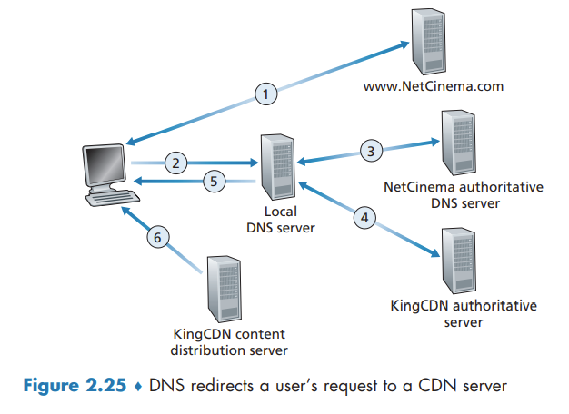

Video Streaming and Content Distribution Networks
Video Streaming and Content Distribution Networks
Internet Video
From a networking perspective, perhaps the most salient characteristic of video is its high bit rate. Compressed Internet video typically ranges from 100 kbps for low-quality video to over 4 Mbps for streaming high-definition movies; 4K streaming envisions a bitrate of more than 10 Mbps.
We can also use compression to create multiple versions of the same video, each at a different quality level. For example, we can use compression to create, say, three versions of the same video, at rates of 300 kbps, 1 Mbps, and 3 Mbps. Users can then decide which version they want to watch as a function of their current available bandwidth.
HTTP Streaming and DASH
All clients receive the same encoding of the video, despite the large variations in the amount of bandwidth available to a client, both across different clients and also over time for the same client. This has led to the development of a new type of HTTP-based streaming, often referred to as Dynamic Adaptive Streaming over HTTP (DASH). In DASH, the video is encoded into several different versions, with each version having a different bit rate and, correspondingly, a different quality level. The client dynamically requests chunks of video segments of a few seconds in length.
Content Distribution Networks
In order to meet the challenge of distributing massive amounts of video data to users distributed around the world, almost all major video-streaming companies make use of Content Distribution Networks (CDNs).
CDNs typically adopt one of two different server placement philosophies:
- Enter Deep. Into the access networks of Internet Service Providers, by deploying server clusters in access ISPs all over the world. Get close to end users. The task of maintaining and managing the clusters becomes challenging.
- Bring Home. Building large clusters at a smaller number (for example, tens) of sites. Typically results in lower maintenance and management overhead, possibly at the expense of higher delay and lower throughput to end users.
CDN Operation
